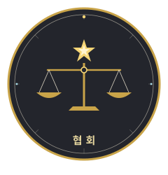
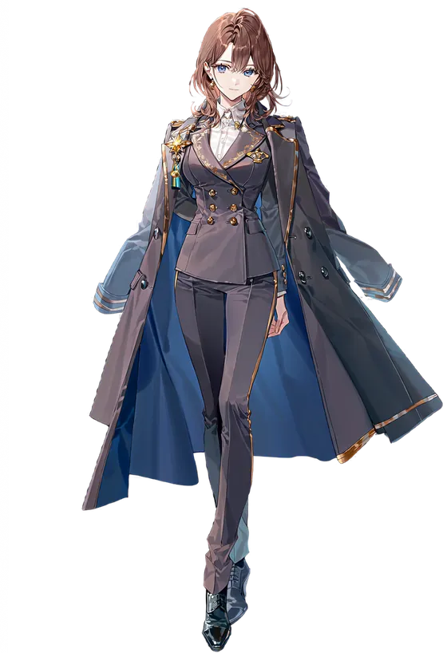
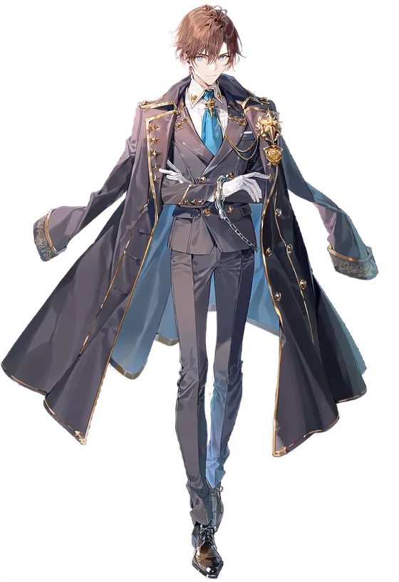

KOREA · STATE AGENCY협회
Korea Hunter Association칼은 길드가 들고, 도장은 우리가 찍는다.
시그니처 힘 판정 · 제도

- ①정체성
- 등급 판정, 라이센스 발급, 게이트 배정, 다크 헌터 단속, NDAS·NATC 감독, 격리구역 운영.
- ②창립
- 격변 직후 국가가 각성자를 제도 안으로 편입하려 세웠다. 천명은 협회의 오른팔로 출발해 독립한 자식뻘이다.
- ③시그니처 힘
- 강함이 아니라 인정할 권한. 등급을 매기고, 자격을 주고, 빼앗는다.
- ④조직 문화
- 관료제, 문서, 절차. 개인 무력은 길드보다 아래지만 제도와 명분과 정보를 쥐고 있다. 부서 간 사일로와 책임 회피도 있다.
- ⑤그림자
- 권위는 있는데 힘이 없다. 대형 길드에 휘둘리고, 사고가 나면 책임은 협회가 진다. 현장과의 괴리.
- ⑥비주얼
- 엠블럼은 저울 위의 별(판정). 차콜 그레이, 아이보리, 국장 금색. 길드의 화려함과 반대되는 정제된 관복.
- ★판단하는 자리의 무게
- 협회 사람들은 남을 판정하고 관리할 권한을 쥔 대가로 자기 인생은 판정 밖에 놓인다. 협회의 등급은 길드보다 의도적으로 낮다(S~B). 권위는 최상, 무력은 중위. 자기보다 센 SS급 길드 마스터들의 등급을 자기가 매긴다는 뒤틀림이 협회의 핵심이다.
Members